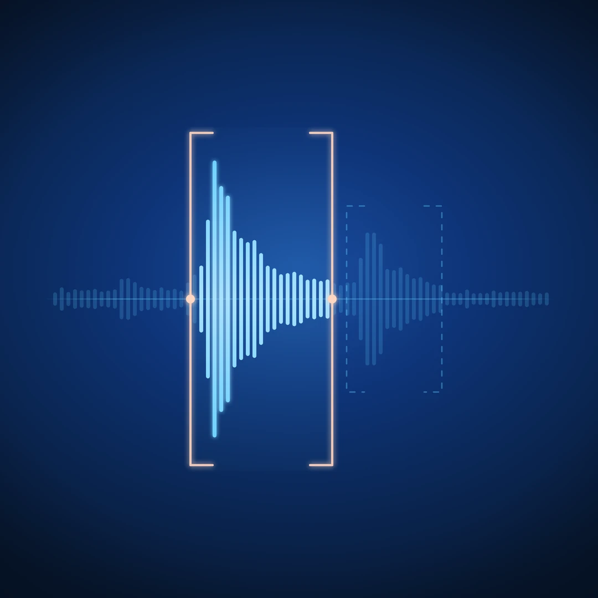

A Sound Is Not a Sample Yet

You hear a cabinet slam shut. It has exactly the weight and short metallic rattle you want, so you take out your phone and record it.
When you listen back, the sound is still there — but so are the movement of the phone, a second of waiting, the room, and another smaller impact after the door closes. Dropping the whole recording into a sampler or video timeline does not feel right.
You captured a sound. You have not made a usable sample yet.
A recording preserves a stretch of time. A sample is a decision about what inside that time matters. This article covers the five decisions that turn an everyday recording into material you can use in music, film, video, or games.
1. Find the actual moment
Real-world recordings rarely contain one perfectly isolated event. The cabinet may creak before it moves, hit the frame, rattle, and then resonate into the room. Each part can serve a different purpose.
Before reaching for EQ or compression, listen through the recording and identify the moment that made you press Record. Then listen once more for the things around it.
You may find:
- A sharp impact that works as percussion
- A mechanical click that can become a transient layer
- A longer resonance suited to a transition or atmosphere
- Several related variations from the same object
The first useful step is not processing. It is noticing what the recording already contains.
2. Choose where the sound begins
The beginning of a sample controls how immediate it feels.
Cut too early and you keep handling noise or unwanted movement. Cut too late and you remove the small lead-in that makes an impact feel physical. A difference of only a few milliseconds can turn a scrape into a click or make a heavy object feel strangely weightless.
Start by placing the boundary slightly before the main event. Audition it in context, then move it later until the sample responds quickly without losing its natural attack.
For percussive use, the beginning usually needs to be tight and repeatable. For film or sound effects, a short approach can make the action feel more believable. There is no universally correct boundary; there is only the boundary that suits the next use.
3. Decide how much tail and context to keep
The end of a sound carries information about the object and the place around it.
A short tail makes a sample compact and easy to sequence. A longer tail preserves weight, room size, and physical character. The background may be distracting in one project and exactly what gives the sound identity in another.
Ask what the sample needs to communicate:
- For a drum rack: keep the impact clear and the tail controlled.
- For a film cut: preserve enough approach and decay to support the picture.
- For a game asset: use predictable boundaries and create related variations.
- For a texture: retain the room and movement that make the recording feel alive.
Silence is not always the ideal ending. Sometimes the natural environment is part of the instrument.
4. Process the problem, not the personality
Once the boundaries work, listen for what actually prevents the sound from being useful.
Low-frequency handling rumble may need a high-pass filter. An uneven event may benefit from light compression. A long noisy tail might need a fade or gate. The level may simply need to be raised.
Make the smallest move that solves the problem.
It is easy to treat every field recording as a restoration task: remove the background, flatten the dynamics, correct the tone, and make everything pristine. But the apparent imperfections are often the reason the sound is interesting. A mechanical rattle suggests age. A little room establishes scale. A second contact creates a rhythm that would be difficult to design deliberately.
Clean is not the same as useful. The goal is clarity of intention while preserving the detail that made the sound worth recording.
5. Prepare it for where it is going
A sample is finished in relation to its destination.
For a sampler, check that it responds immediately and plays at a useful level beside other sounds. For video, audition it against the picture rather than in isolation. For a game, test repeated playback and make sure several variations remain consistent. For a shared sound library, use clear names and keep related sounds together.
Before export, check:
- Does the sample begin when expected?
- Does the tail stop naturally?
- Is its level consistent with related sounds?
- Did processing remove any important character?
- Can someone understand the filename without hearing it first?
These details are less exciting than recording the original sound, but they determine whether the result will actually be used.
One recording can become several assets
Recording an activity instead of a single isolated hit often gives you a family of sounds.
A drawer opens, catches, closes, and resonates. A handful of stones creates impacts of different weights. One walk contains heel strikes, scuffs, cloth movement, and changes in surface.
These variations are useful because they belong together. They share the same object, location, microphone, and moment without being identical. In music, variation makes repetition feel less mechanical. In games, it reduces the obvious looping of a single asset. In film, it gives the editor choices that remain sonically coherent.
Do not judge a recording only by the event you intended to capture. The useful material may be beside it.
A practical phone-recording workflow
The next time you hear something worth keeping:
- Record a few seconds before and after the event.
- Repeat the action several times when possible.
- Listen once without editing and mark every interesting moment.
- Set the beginning and ending for the intended use.
- Compare the edited version with the original.
- Apply only the processing needed to make it travel.
- Export, name, and test it in the real project.
The final step matters. A sound that seems impressive alone may disappear in a mix, feel late against picture, or become tiring when repeated. Context decides whether the sample is finished.
The short version
- A recording captures time; a sample captures intent.
- Selection and boundaries are already sound-design decisions.
- Context is not automatically noise.
- Process only what prevents the sound from working.
- One ordinary take may contain several related assets.
- Test the result where it will actually be used.
A useful audio tool should not decide which sound matters. It should help reveal the possibilities clearly enough that you can decide.
That principle sits at the centre of how we think about sound at Audivea: surface what matters, preserve the original, and leave the creative decision with the listener.